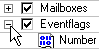
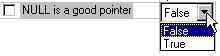
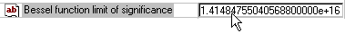

Chapter 2. Configuration Tool Views
Configuration Pane

The Configuration Pane presents a hierarchical view of the configuration.
It behaves as other tree-based views do (such as the desktop explorer). For example, nodes may be expanded or collapsed by double-clicking the node label or by clicking on the left-hand button:

The Configuration Pane includes controls to change the configuration. Each configurable item is represented by one of the following controls:
Boolean control
A Boolean item may be set or unset (like a C++ bool):

Radio control
A radio item is similar to Boolean item. However, you can select only one radio item within each branch of the tree.
Integer control
An integer item may be set to an integer value (like a C int):

String control
A string item may be set to a string value (like a C string literal):

Enumeration control
An enumeration item may be set to one of a defined set of values (like a C enum value):
Group controls
Group items are used solely to group child items. They do not correspond to any preprocessor macros, and are not configurable:

Configurable items correspond to preprocessor macros in output header files. The two important attributes of a configurable item are whether the item is defined, and if so, what its value is.
An item is defined (will result in a #define output) if it is enabled. Enabled items are displayed normally; disabled items, and descendants of disabled items, are grayed.
The value of an enabled configurable item is shown in Table 2-1.
Table 2-1. Types of configurable items
| Type | Header File Output |
|---|---|
| Boolean | #define MacroName or #undef MacroName |
| Radio | #define MacroName or #undef MacroName |
| Integer | #define MacroName Value |
| String | #define MacroName Value |
| Enumeration | #define MacroName Value |
Child Items
Each boolean, radio and group item can be the ancestor of other items. The state of descendants of Boolean and Radio items depends on their ancestor — if the ancestor item is unset then descendants will be disabled. Disabled descendants are displayed using gray text:

Although the values of grayed items are still visible, they may not be changed unless you first enable the Boolean or Radio ancestor item.
Changing Configurable Item Values
You can change the value of configurable items in two ways — by clicking on the tree control, or by clicking on the cells to the right of the tree.
Using the Tree Control
Boolean and radio items
You may change values by clicking the associated checkbox or radio button (the keyboard shortcut is the space bar).
Integer and enumeration items
You may increment values by clicking the associated icon (the keyboard shortcuts + and - also increment and decrement the values). Wrap-around occurs when a boundary value is reached; a new value may only be set using in-cell editing (see below).
String items
You may only change string values using in-cell editing (see below).
In-Cell Editing
On the right side of the Configuration Pane is a vertical gray dividing line which divides the item values from the rest of the tree. This line acts as thin splitter bar and may be dragged left or right as desired. To the right of the divider is a cell for each configurable item.
Clicking on a cell allows you to edit its contents; after choosing or typing a value, click outside of the cell to enter your change.
Boolean, radio and enumeration items are edited using a combo box:

Integer items are edited using an edit box:

String items are of two types: multi-line and single-line strings (see below). Multi-line strings are edited using a pop-up dialog that is invoked by clicking the “edit” button:

Single-line strings are edited using an edit box, as for integer items:

Integer items" values may be specified in hexadecimal or decimal format. Hexadecimal format values may be specified using a leading “0x”.
The manner in which integer items are specified using in-cell editing does not affect the header file output format, which is always decimal. All items are assumed to be 32 bits in width, although maximum and minimum values may be used to constrain the range.